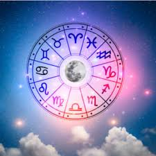

¡Bienvenido a mi pagina web!

Representa el impulso oculto, incluso mágico del ser humano, también rige la infancia y los acontecimientos relevantes en esta etapa, simboliza la maternidad y los procesos de salud. El lugar donde se ubica en la carta astral planeta lo oscuro del individuo, algo secreto y no precisamente equilibrante, que debe ser trascendido; por último se relaciona con el funcionamiento del organismo, en especial con la digestión.
Llena el Formulario
El nativo se caracteriza por tener reacciones rápidas, espontáneas y directas. Es impulsivo y sin consideración de las consecuencias de sus actos, también es impaciente, inquieto y con frecuencia irritable. Sus arranques suelen ser temporales y se olvida fácilmente . Es muy independiente en su manera de ser, además tiene tendencia a dominar a otros emocionalmente y suele atraer una pareja con carácter fuerte. Exceso de trabajo e infinidad de acciones que le impiden dedicarle tiempo a lo que verdaderamente quieren. La madre suele ser dinámica y los procesos digestivos son acelerados . Embarazos a temprana edad y partos rápidos Todo lo relacionado con la familia se haya supeditado a cambios inesperados y repentinos.
Estabilidad y comodidad, aviva los vínculos con el arte o el teatro necesidad de arriesgarse en un lugar específico sensualidad y atractivo físico persona segura de sí . buena fertilidad . facilita los partos y el área sentimental. Sus relaciones afectivas son duraderas y obsesivas, además es fiel y acosa a quien ama. El individuo es de reacciones lentas, sus emociones son firmes, serenas y bondadosas, también suele controlar su temperamento pero cuando se enoja es de cuidado, tiene un fuerte deseo de seguridad material y el dinero es importante. Suele tener buena posición para atraer riqueza en general. Le cuesta empezar algo pero cuando lo logra es persistente, es aficionado de la buena mesa y el confort.
Persona versátil, impredecible y perspicaz, además suele adaptarse rápidamente a los cambios. El nativo tiende a hablar constantemente, es curioso, es rápido mentalmente, usualmente racionaliza sus emociones,. sistema nervioso activo , rupturas por cambios de sentimientos muchas ideas pero no es capaz de concretarlas, frecuentemente cambios de residencia a ciudades cercanas. Fuertes lazos con parientes, mucha vacilación naturaleza dual y superficialidad, inconstancia. Diversificación, inestabilidad, falta de definición y dispersión. Dinamismo en la relación con el entorno, armonía con las personas que los rodean, problemas respiratorios, viajes constantes, necesidad de aprender y experimentar. No fomenta los hijos pero si los da nacen varios en el mismo parto con algunas complicaciones.
Facilita los partos, tendencia a la obesidad, instinto maternal y de protección desarrollados las situaciones de índole familiar lo absorben problemas de tipo psicológico. Timidez y temor a situaciones desconocidas, desarreglos digestivos y notoria susceptibilidad, pereza descanso, reposo. Persona muy sensible en su respuesta al medio ambiente, es receptivo y doméstico emociones profundas e intensas, el nativo tiende con frecuencia a los cambios de humor sin embargo es sereno y no es nada severo. Fuerte deseo de ser maternal con los demás, fuertes lazos con la madre y la familia. La seguridad en el matrimonio y en el hogar son importantes para sentirse bien desde el punto de vista emocional, posee una fuerte memoria a través de los sentimientos, puede tener condiciones psíquicas, suele ser un buen cocinero, por último, suele atraer una persona maternal y casera.
El individuo es orgulloso y altivo con facilidad de doblegar y dominar a las personas con las que se relaciona . Conflictos familiares e irritabilidad. Problemas de autoridad por acato de disposiciones o por imposición, visión amplia de las cosas y sobre todo de gran organización y disciplina. Madre orgullosa decidida y de carácter fuerte. y suele tener dificultad en los partos. Persona alegre con mucha confianza en sí mismo con cualidades de líder, orgulloso y se suele ofender fácilmente, desea ser el centro de atracción porque necesita ser apreciado y admirado. Es afectuoso, generoso y cálido, también le agradan los niños, los deportes y toda forma de entretenimiento, le agradan las reuniones sociales, tendencia a querer dominar a otros y por último, suele atraer una pareja de carácter positivo y dramático
Individuo crítico, minucioso y perfeccionista . Realización de actividades que exigen cuidado análisis y precisión. Problemas sentimentales y dificultad con el sexo opuesto, temores y complejos relaciónados con su vida afectiva posición que denota problemas en los partos, suele tener pocos hijos o ninguno. El nativo es reservado, modesto con fuertes deseos de servir a los demás, tiende a tener complejo de inferioridad de ahí que se esfuerce desarrollar la parte intelectual. Pone énfasis en el aseo personal, en la higiene, la limpieza de la casa. Le interesan todo lo que se refiere a la salud y la preparación de los alimentos. Exigente respecto a los pequeños detalles formalista y conservador personalidad práctica y trabajadora. Por último, suele atraer un tipo de pareja reservada y tímida.
La necesidad de relacionarse es fuerte, pero las emociones y los sentimientos pueden ser escasos. Son diplomáticos, es cortés de tomar compromisos, en su apariencia es elegante, de buenas y finas maneras. Su hogar generalmente es un lugar muy agradable donde realiza actividades sociales. No le agradan las discusiones y tiende a transar; desea gustarle a todos. Habilidad para las relaciones públicas. Y suele atraer un tipo de pareja sociable, servicial y práctica. El individuo busca la belleza y la armonía, múltiples posibilidades en la vida afectiva que sirven como soporte a otras personas, inclinaciones artísticas, pasividad, problemas legales por propiedades. Influencia de la abuela materna en su vida
Los sentimientos son profundos o intensos, suele ocultar la parte emocional. El nativo se vuelve muy introspectivo, dominante y agresivo. Posesivo en la familia; de defenderse fácilmente y puede ser celoso y hasta rencoroso. Se toma la revancha a su debido tiempo, con premeditación y jamás se olvida de los insultos recibidos. Sexuales y físicamente fuerte; el temperamento es extremista generalmente consigue lo que desea por su fuerza voluntad, pero después se da cuenta que no era lo que realmente quería. Suele atraer parejas magnéticas, que son celosas y posesivas. Tensiones y conflictos en donde vive. Distanciamiento temprano de la madre o diferencias notorias que generan recelos y resentimientos. Partos difíciles en los que la vida de uno de los dos puede peligrar. Obtención de poderes ocultos, gustos por lo esotérico, extremismo y excesos sensuales Muertes que alteran las relaciones familiares, problemas hormonales y resentimientos.
Persona sincera, alegre, optimista con muchos deseos de sentirse libre. conversadora de profundas convicciones morales filosóficas, aficionados al deporte y le agrada cambiar de casa. Residencia en otros países o en lugares muy alejados del lugar que nació, los nativos son aficionados a viajar. si no existen signos fijos para sujetarlo. Suele atraer una pareja liberal en el amor. Permanentes viajes desplazamientos inclinación e inversión diversidad de actividades, familia relacionada con el exterior y viajes largos. Luchas en la vía sentimental, alegría rodea las relaciones familiares, individuo expresivo, expansivo, dinámico y jovialidad. Partos que se realizan en el exterior, hijos fruto de un vínculo con extranjeros
El nativo es conservador, de fuertes ambiciones que toman la vida seriamente con un punto de vista material y práctico no es posición favorable para la luna porque está en el signo de su exilio. aunque hace que el activo prudente frugal y trabajador cuando está bien aspectado también es cierto que tiende a hacerlo ambicioso por una fuerte seguridad y posición social eso fue conducir al egoísmo sobre todo cuando alcanza mayores responsabilidades siente tendencia a lograr poder cualquier cosa sin respetar los sentimientos de los demás quiere ganar el reconocimiento como persona importante y poderosa por lo general no es una persona feliz muy simpática ni emocional influencia muy muy fuerte influencia muy fuerte de la madre.suele atraer con carácter serio, poco demostrativa y en sus afectos Digestión que se efectúa lentamente restricciones en la niñez con el padre sería estricto cumplimiento del deber nativo reflexivo símbolo de madurez dificultad para manifestar sentimientos disposición hacia todo aquello que requiera método cuidado resultados sabios en sus diversas acciones tristeza y pesimismo austeridad, problemas en los partos
El individuo es sensible a los problemas más allá en lo personal a las a los humanitarios acuarios es un signo mental y no emocional así que los sentimientos son más bien fríos desapegado o estás apasionado que busca Libertad en la expresión emocional es una persona amistosa de modo personal y eso que es jugar frecuentemente su hogar es un lugar de reunión de amigos y actividades grupales puede sufrir de artritis la última parte de su vida y cristalización de sus emociones. suele atraer una pareja intelectual e independiente. Se le facilita la comunicación la relación con los demás la independencia y crea temor a estar encerrado rechazo a todo aquello que atente contra su libertad posibilidad de realizar actividades sociales y amplió alcance, problemas nerviosos y en los partos facilidad para vivir en comunidad y para relacionarse con gran número de personas vía pública muy activa madre liberal amplia habría para la química y para lo que tenga que ver con la tecnología.
Persona receptiva una bondadosa psíquica está es una buena posición para músicos y artistas porque indica una elevada sensibilidad de imaginación e inspiración. El nativo siente simpatía por el más débil sufrimiento a través de las emociones tendencias psíquicas o medio únicas. Puede captar el estado emocional mental de los demás y esto puede conducirlos a ser retraídos para proteger el mismo de sus emociones necesita fortalecer la voluntad para contrarrestar el impacto de las vibraciones negativas de otros. suele atraer una pareja con carácter sensible y sentimental. El individuo tiene mucha intuición, la premonición, la susceptibilidad, persecuciones reales supuestas sobre imaginación conflictos internos malentendidos y contrariedades rodean las relaciones familiares desarrollo psíquicos ensoñación, estrecha relación con espíritus y facilidad de comunicación con ellos complicaciones experiencias extrañas en el partos.